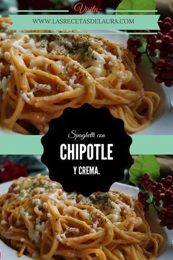

9 recetas fáciles para disfrutar en familia
- Comidas para la familia - 154 recetas caseras- Cookpad
- Menú semanal para toda la familia, recetas caseras | Receta .
- 9 recetas fáciles para disfrutar en familia - HOLA!
- Menú semanal para toda la familia, recetas caseras
- 5 recetas fáciles de fin de semana para toda la familia - HOLA!
- Recetas para toda la familia - Mi bebé y yo - El Mundo
- 6 comidas fáciles para toda la familia | Pequeocio
- 33 recetas para el día a día con las que la familia te hará la ola
- ¿Sin ideas para la cena? 51 recetas rápidas, fáciles y .
- 19 ideas de cenas fáciles, rápidas y sanas para toda la familia .
Recetas Noticias Técnicas Primeros Segundos Postres Buscar Menú Newsletter Suscríbete Síguenos Recetas Noticias Técnicas Primeros platos Segundos platos Postres Ir a Hola.com
SUSCRIBETE A NUESTRA NEWSLETTER
Al registrar su dirección de email, usted reconoce haber leído y aceptado la política de privacidad y las condiciones del portal .
¿Qué quieres buscar? © Adobe Stock COCINA / NOTICIAS9 recetas fáciles para disfrutar en familia
Aprovecha el fin de semana para compartir con los tuyos alguno de estos sabrosos platos
31 DE ENERO, 2020 - 11:18
Por ¡HOLA! COCINA
Dentro de nuestro inmenso y variadísimo recetario existen algunos platos que inmediatamente asociamos a esos días festivos alrededor de una mesa en compañía de la familia o amigos Sábados o domingos de eternas y distendidas sobremesas donde no hay espacio para las prisas y el estrés. Por supuesto que una paella o un cocido se pueden disfrutar de manera individual un martes vulgaris , sin embargo, es como si no supieran igual… Precisamente aprovechando la llegada del finde os proponemos a continuación algunas de esas recetas ideales para disfrutar en familia . Para acceder a su modo de elaboración solo tienes que pulsar sobre las imágenes.
Paso a paso: Paella valenciana de pollo y conejo
La paella valenciana por antonomasia ha de llevar pollo y conejo, como carnes, y alubias blancas o garrofó y judías verdes o bachoquetas , como verduras. Estos ingredientes, además del arroz, son los que va a llevar esta popular receta, que según manda la tradición, se come directamente desde el recipiente en el que se cocina.
VER RECETA
Paso a paso: Cocido montañés
Prácticamente cada región de España tiene su cocido, uno de esos platos perfectos para un domingo de invierno. Desde el cocido madrileño, a la Escudella i carn d’olla catalana… En este caso se trata del cocido montañés, típico de Cantabria. Para su elaboración se utilizan alubias blancas, berza y productos de la matanza del cerdo.
VER RECETA
Paso a paso: Macarrones gratinados a los dos quesos
Este plato será la debilidad de los amantes del queso fundido. Además, estos macarrones también cuentan entre sus ingredientes con jamón serrano. Una receta que gusta tanto a niños como a mayores y que es realmente sencilla de preparar.
VER RECETA
Paso a paso: Pollo al horno
Otro clásico infalible para disfrutar de una comida de fin de semana: pollo al horno. Aquí la clave está en vigilar que no quede seco. Si quieres darle un toque diferente prueba a usar naranja en lugar del clásico limón. ¡Verás qué rico queda!
VER RECETA
Paso a paso: Albóndigas con guisantes
Sin duda, cualquier plato elaborado de forma casera sabe mil veces mejor, así que te animamos a que pruebes con estas albóndigas acompañadas de guisantes y espárragos. Una receta muy tradicional que puede convertirse en la protagonista de cualquier mesa ¡y no nos extraña! El resultado es increíblemente sabroso.
VER RECETA
Paso a paso: Bacalao en salsa verde con almejas
La salsa verde, tradicional del País Vasco, no puede ir mejor con el bacalao, que con su gelatina dará una textura inigualable al plato. Una gran cazuela para un gran almuerzo.
VER RECETA
Paso a paso: Ensaladilla rusa
Otro clásico de las mesas familiares: esa fuente enorme de ensaladilla rusa, perfecta para compartir. No sólo es deliciosa, sino que, además, es sencilla de preparar y la puedes dejar lista con antelación.
VER RECETA
Paso a paso: Lasaña de pollo y espinacas
Somos muy fans de la lasaña. Esta preparación italiana se puede hacer de mil y una formas: con verduras, carne, pescado, marisco o con pollo, como en esta ocasión. Además, incorporaremos también una salsa bechamel clásica.
VER RECETA
Paso a paso: Tarta de queso con galletas Oreo
Las famosas galletas norteamericanas comparten protagonismo aquí con el queso (siempre en crema). Te aseguramos que a los niños -¡y mayores!- les encantará. Además, no necesita ni horno.
VER RECETA
Este y muchos más trucos y recetas top, en tu mail cada semana si te suscribes a nuestra newsletter de COCINA aquí.
RECOMENDAMOS Solo para los comensales más sibaritas: este es el frigorífico que puedes diseñar a medida MÁS SOBRE: COCINA TRADICIONAL PLATOS DE CUCHARA RECETAS DE INVIERNO ¡HOLA! COCINA MÁS NOTICIAS DE COCINA TRADICIONAL : De plato en plato por el Madrid más castizo Cinco restaurantes para comer una rica fabada sin pisar Asturias 15 claves para preparar la salsa bechamel perfecta RECOMENDAMOS Solo para los comensales más sibaritas: este es el frigorífico que puedes diseñar a medida ÚLTIMAS NOTICIAS DE COCINA: Los mejores ‘tips’ para unas verduras a la brasa… ¡memorables! ¿Disfrutar de los platos de MasterChef a domicilio? ¡Ya es posible! ¿Tartas y fruta? ¡Disfruta de esta deliciosa combinación! 10 ideas para que tus cenas de verano sean frescas y saludables Ensalada de patatas al estilo alemán: si la pruebas, ¡querrás repetir! Toni, el jugador de póker profesional, undécimo expulsado de 'MasterChef 9' RECOMENDAMOS Todas las claves para adaptar la tele con éxito (y estilo) a cualquier espacio del hogar Protege, repara y regenera: descubre el sérum favorito de los expertos con el activo de moda Cabárceno, la visita más salvaje e imprescindible de Cantabria RECOMENDAMOS Todas las claves para adaptar la tele con éxito (y estilo) a cualquier espacio del hogar Protege, repara y regenera: descubre el sérum favorito de los expertos con el activo de moda Cabárceno, la visita más salvaje e imprescindible de Cantabria Política de privacidad Advertencia Legal Política de Cookies Gestionar cookies Suscripciones @2000-2021, HOLA S.L.COMPARTIR
MENÚ
CopiadoPINCHA SOBRE LA ESTRELLA QUE QUIERAS


Mauris vulputate dolor
Rutrum fermentum nibh in augue praesent urna congue rutrum.
Etiam posuere